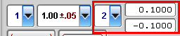
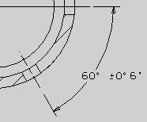
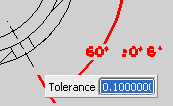
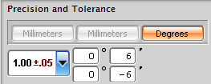

角度公差精度和值的设置就跟设置任何线性或径向尺寸一样，注意到初始公差值显示为小数值。

当尺寸公差值显示为角度、分，或者角度、分、秒，小数值将转化为度数值。

当双击图形窗口上的公差值时，公差屏显输入框显示小数值，而且您要以小数格式输入公差值。

但是，当您使用尺寸标注样式对话框来编辑角度尺寸公差值时，值将根据在单位选项卡中选择的角度公差显示类型来表示。如果格式是设置为以度、分或秒来显示角度精度，那么将会提示您提供度、分或秒的值。
